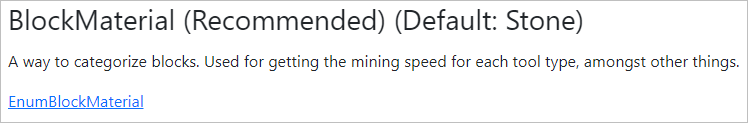

Welcome to the Vintage Story JSON Reference
If you want to learn how to mod the game, check out the tutorials on the Official Vintage Story Wiki.
Using this site
This site can be used in two ways:
- To see the functionality of a specific JSON property found within an asset. To do this, enter the exact property name in the search bar at the top-right of this page.
- To see what properties or options are available for specific assets. To do this, use the below Pages of Interest to find the asset type, and navigate through the properties available.
JSON Properties
Each JSON type has a set of properties, known as fields, that will control how it works. The following is the standard look of every field in the following pages.

Each field will list its name, its recommended status, and its default value if there is one.
Field statuses include:
- Required - Required for this JSON type, and therefore does not have a default.
- Recommended - Recommended for this JSON type.
- Optional - Optional for this JSON type.
- Obsolete - Obsolete and should not be used. Usually contains a link to an alternative property that should be used.
Below this will be the description or usage of the property, and a link to the property type. Many JSON types have properties which contain other JSON types, so following the link will allow you to see child properties that can be included. Note that many JSON types have examples on their page.
JSON Attributes
Some JSON types, especially behaviors, may use attributes. Attributes are identical to properties, but will need to be placed inside of a "attributes" property of a relevant JSON type. All attributes will appear under the 'Attributes' title on a type.

Inheritance
Many JSON types use properties (extend) from other JSON types. This is referred to as inheritance. Pages that use inheritance will have the following heading near the top of their page.
In this example, BlockType extends from CollectibleType, which extends from RegistryObjectType. Therefore, BlockType can use all the properties from BlockType, all the properties from CollectibleType, and all the properties from RegistryObjectType. You can click on any inherited pages to go there.
Currently documented assets:
Documenting JSON assets takes time! Currently, this site contains exhaustive documentation for the following asset types:
- Blocktypes
- Itemtypes
- Entities
- Recipes (All Types)
- Patches
- Behaviors
- Block Behaviors
Pages of Interest
- RegistryObjectType - All blocks, items, and entities extend from this. Controls IDs and variant types.
- CollectibleType - Blocks and items extend from this. Anything that can be held in the inventory is counted as a collectible type.
- ItemType - Page for item types. Note that all JSON properties for item types come from the above CollectibleType and RegistryObjectType pages.
- BlockType - This lists all properties for BlockTypes.
- EntityType - This lists all properties for EntityTypes.
- Recipes:
- AlloyRecipe - Properties for mixing metals in a crucible.
- BarrelRecipe - Properties for making things in barrels. This is the main way of using liquids in recipes.
- ClayFormingRecipe - Properties for making clay objects using the clay forming system.
- CookingRecipe - Properties for making meals and other things in cooking pots.
- GridRecipe - Properties for making things in the crafting grid.
- KnappingRecipe - Properties for making stone objects using the stone/flint knapping system.
- SmithingRecipe - Properties for making metal objects using an anvil.
- JsonPatch - All properties for JSON patches. Consider using the modmaker to create these.
- BlockBehaviors - The base class of all Block Behaviors. Use the 'derived' section or search feature to find specific behaviors.